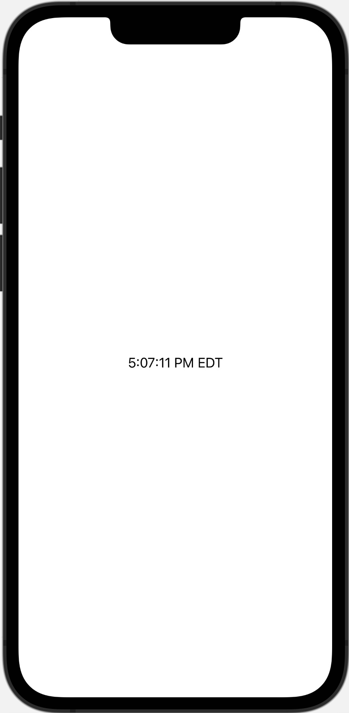
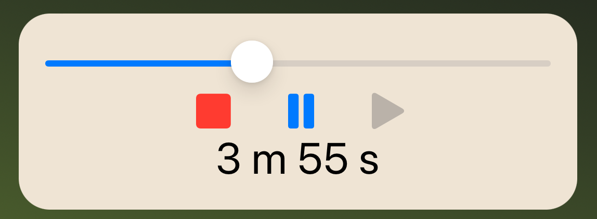
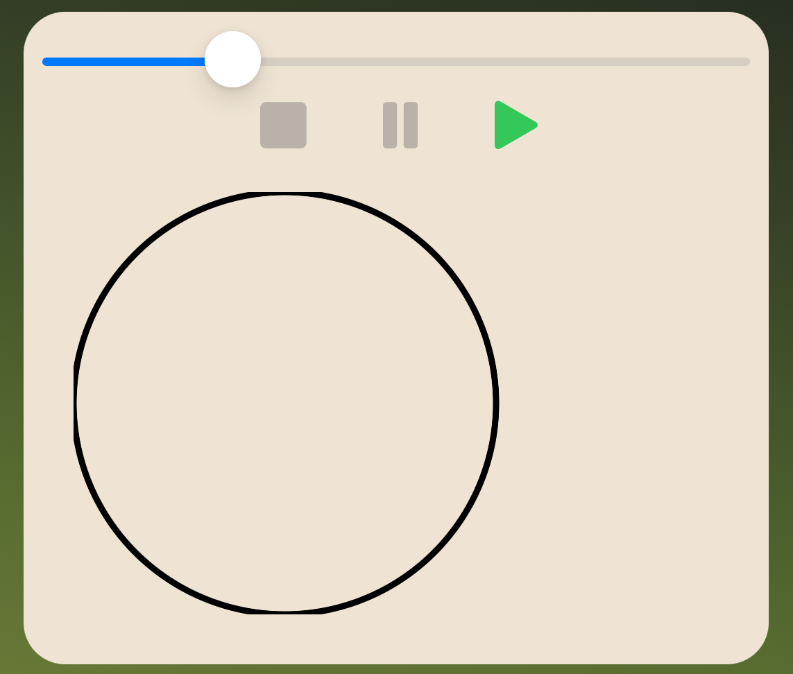
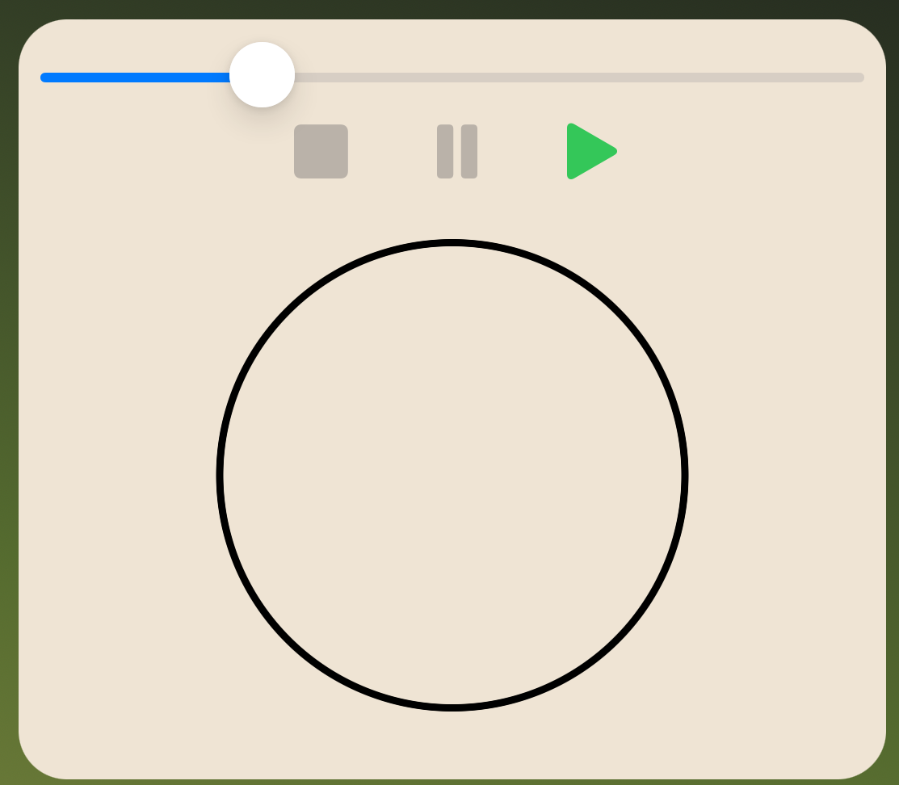
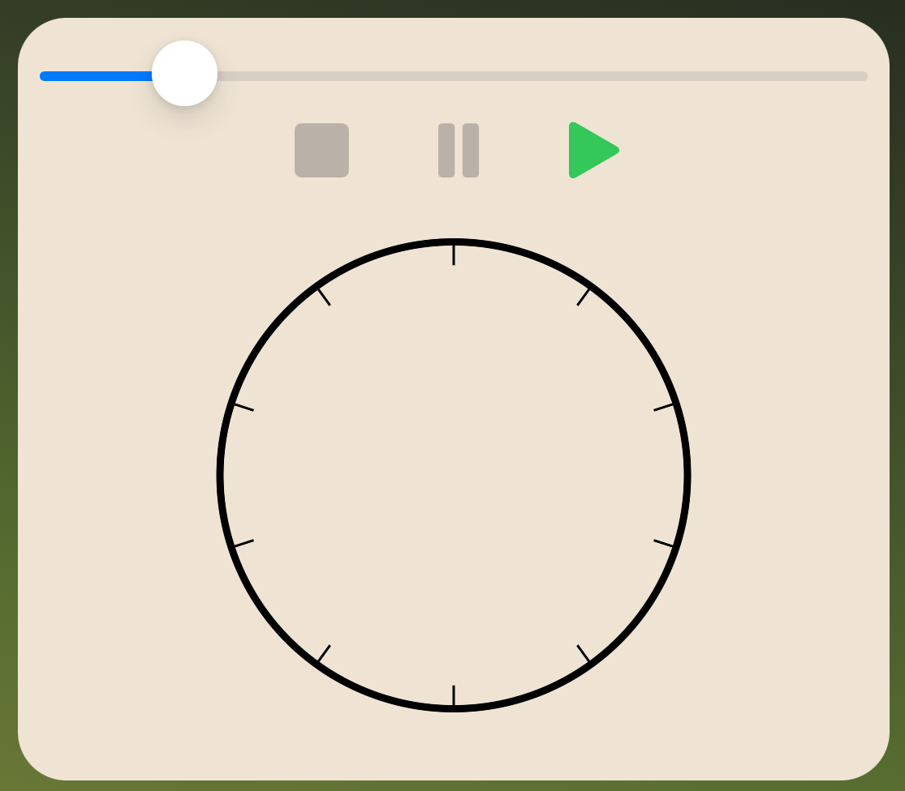
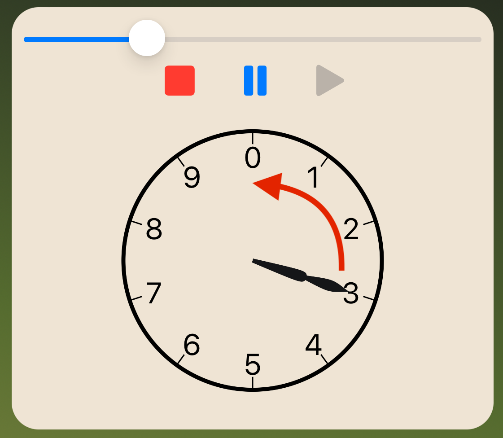
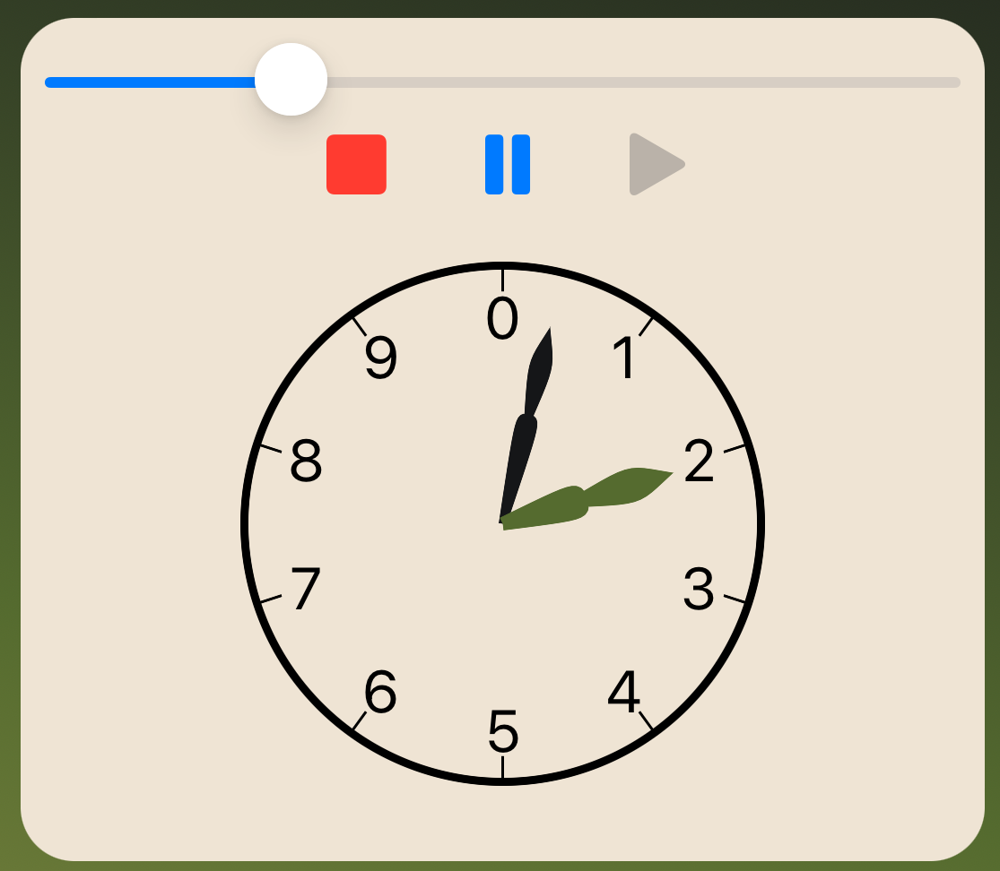
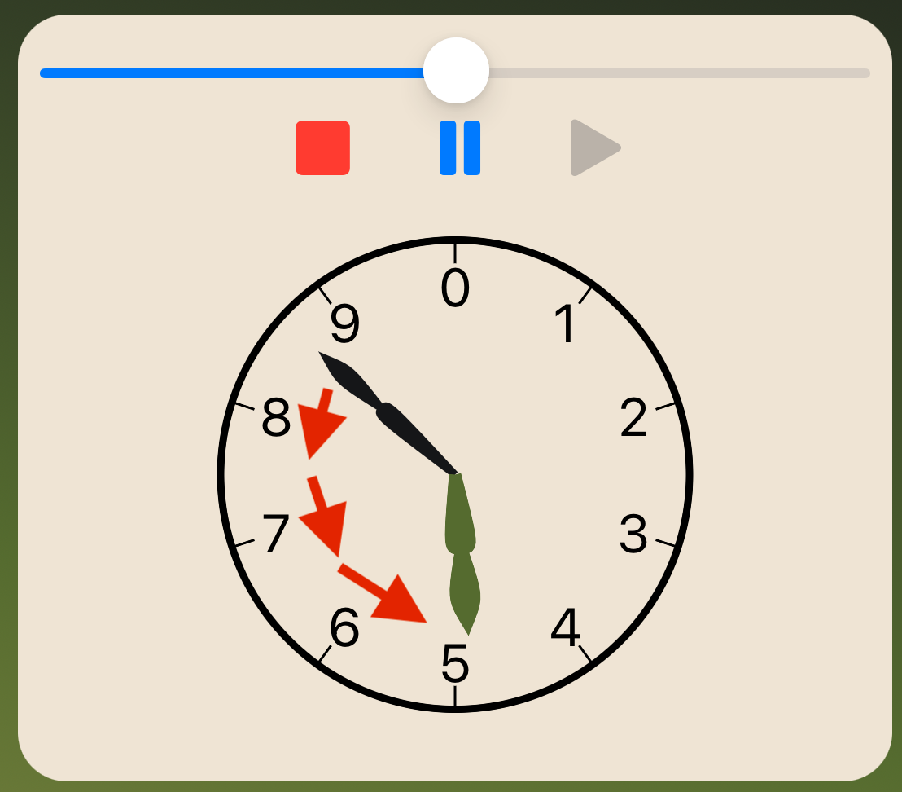
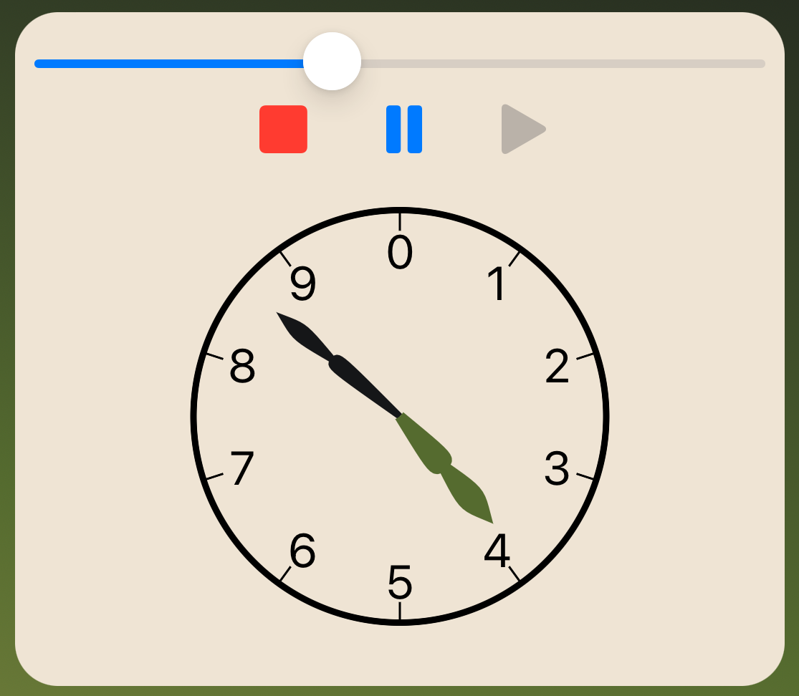

8 Time-Based Animations¶
Using SwiftUI effectively requires adapting an app’s UI based on its state. The animations you’ve used in the app for the last few chapters all animate based on state changes. The timer view you created in Chapter 6: Intro to Custom Animations used Combine to create a timer and publish events your view used to trigger changes to the timer. In earlier versions of SwiftUI, if you wanted to update a view at regular intervals, like a timer, then you had to use this method.
Then TimelineView arrived. Instead of providing layout or control, TimelineViewacts only as a container that redraws its content at scheduled points in time, regardless of any state changes. The same version of SwiftUI also added the Canvas view, which provides a way to produce efficient 2D graphics inside a SwiftUI view. In this chapter, you’ll combine these elements to create an animated analog timer for your tea brewing app.
Exploring the TimelineView¶
Open the starter project for this chapter, and you’ll see the Brew Timer app from the past few chapters. Open AnalogTimerView.swift under the Timer group. Don’t worry about all the commented code. You’ll use it in a minute.
Now replace the view’s body with:
TimelineView(.periodic(
from: .now,
by: 1.0
)) { context in
Text(context.date.formatted(
date: .omitted,
time: .complete
))
}
The argument to the Timeline view provides a schedule that SwiftUI uses to update its content. Here you use the periodic(from:by:) schedule to specify the view should start updating immediately and refresh once per second.
The context provided to the closure provides the date that triggered in its dateproperty. You use formatted(date:time:) to show only the time component of the property. In the preview, you’ll see that you built a functional clock in just three lines of code.

Note that the view contains no state information and updates without any state to change. That’s the power of the TimelineView. It lets you create a view that updates based on time, not state.
Now add the following code to the top of the view:
@State var timerLength = 0.0
@State var timeLeft: Int?
@State var status: TimerStatus = .stopped
@State var timerEndTime: Date?
You will later set the initial value of timerLength to the value of the passed in timerand add a control letting the user adjust it. The other three properties will track the status and remaining time for the timer when active.
Next, uncomment the three methods in the view by selecting them and selecting Editor ▸ Structure ▸ Comment Selection, or pressing Command-/. These methods calculate the amount of time remaining on the timer based on the status and timerEndTime of the timer. Go to AnalogTimerView.swift and replace its body:
VStack {
// 1
Slider(value: $timerLength, in: 0...600, step: 15)
// 2
TimerControlView(
timerLength: timerLength,
timeLeft: $timeLeft,
status: $status,
timerEndTime: $timerEndTime,
timerFinished: $timerFinished
)
.font(.title)
// Place timeline here
}
.onAppear {
// 3
timerLength = Double(timer.timerLength)
}
Here’s how the start of your timer works:
- You provide a
Sliderso the user can adjust the default timer length. Note that the value bound to the slider must be aDoublethough you’ll convert it to anIntwhen used. - You use the already provided
TimerControlView, which manages the state of the timer and provides buttons to control it. - When the
VStackfirst appears, you set thetimerLength. Notice the need to convert to aDoubleas mentioned in step one.
Next, add the new timer view in place of // Place timeline here:
TimelineView(.periodic(
from: .now,
by: 1
)) { context in
let timeString = timeLeftString(timeLeftAt(context.date))
Text(timeString)
.font(.title)
}
This TimelineView updates once per second. Within the view, you use the timeLeftAt(_:) uncommented earlier to get the number of seconds remaining on the timer and then convert that to a formatted string using timeLeftString(_:). It then displays the string on the view.
Notice that you include only the part of the view affected by time change inside the closure. Since SwiftUI updates all views contained inside the closure of a TimelineView, including views that don’t change decreases performance without adding any benefit.
Run the app, and you’ll see it already uses the new AnalogTimerView. Start the timer. It works much like before and displays the remaining time as text.

Open TimerView.swift and notice how much less code you need now that SwiftUI updates the views based on time. In addition, you no longer need the TimerManagerclass. As you can see, TimelineView greatly simplifies updating a time-based app. In the next section, you’ll see how to draw graphics using a Canvas view.
Drawing With a Canvas¶
All animations are consecutive images that change over time to provide the illusion of movement. Most of the examples in this book change a view’s state and then allow SwiftUI to manage the process of translating that state change into animation.
Since a TimelineView doesn’t include a state change, you’re responsible for creating the changing views yourself. In this section, you’ll start developing an analog timer by combining the TimelineView with another SwiftUI view — Canvas.
Using a Canvas makes it much easier to produce two-dimensional graphics inside a SwiftUI view. Since drawing code is quite lengthy, you’ll split the different parts of the timer into separate methods.
In AnalogTimerView.swift, add the following new method to it:
func drawBorder(context: GraphicsContext, size: Int) {
// 1
let timerSize = CGSize(width: size, height: size)
// 2
let outerPath = Path(
ellipseIn: CGRect(origin: .zero, size: timerSize)
)
// 3
context.stroke(
outerPath,
with: .color(.black),
lineWidth: 3
)
}
Separating the code keeps it manageable and makes your final view neater. Here’s what this method does:
- The method’s
sizeparameter provides the desired size for the timer. You create aCGSizewith this value as the width and height. - You’ll often use SwiftUI
Paths when working with the canvas. In this case, you use thePathinitializer that creates an ellipse using thetimerSizefrom step one. Since the width and height are equal, the path defines a circle. - You have a path and now want to stroke the path onto the canvas. So, you call
stroke(_:with:lineWidth:)on the canvas. It strokes the ellipse in black as a line three points wide.
Delete the current TimelineView and replace it with:
// 1
ZStack {
// 2
Canvas { gContext, size in
// 3
let timerSize = Int(min(size.width, size.height))
drawBorder(context: gContext, size: timerSize)
}
}
.padding()
Here’s how your first canvas-based code works:
- A
ZStacklets you stack several views that SwiftUI aligns for you. Using theZStacklets you separate the animated and non-animated portions of the view, so the result aligns as though created in a single canvas. - Then you declare a
Canvas. SwiftUI passes two arguments into the closure. The first argument is aGraphicsContextyou use for drawing. The second contains information about the view size you use to scale the view to match the container. - You determine which dimension is smaller, the width or height of the
Canvas, and convert it to an integer. You pass this value to thedrawBorder(context:size:)you created along with the graphics context.
Build and run the app. Tap any tea type, and you’ll see the border for the new timer.

You’ll also see a problem with the border: the circle’s edges are clipped on three sides, creating flat spots. The view shows there because you set the edge of the CGRect at the origin. Some of the extra thickness of the line gets lost outside the view. The circle also lies along the left side of the view and would look nicer centered.
First, you’ll add a small border around the timer to fix these two issues. Change the definition of timerSize to:
let timerSize = Int(min(size.width, size.height) * 0.95)
You reduce the size of the timer to 0.95 of the canvas’s smallest dimension. This reduced space allows the timer’s thicker border to show within the view.
Now you’ll calculate an offset to center the timer. Add the following code between defining timerSize and calling drawBorder(context:size:).
// 4
let xOffset = (size.width - Double(timerSize)) / 2.0
// 5
let yOffset = (size.height - Double(timerSize)) / 2.0
// 6
gContext.translateBy(x: xOffset, y: yOffset)
Here’s how this code centers the view:
- You calculate the offset needed to center the view by subtracting the width of the timer in
timerSizefrom the total width of the canvas after converting the latter to aDouble. You divide this value by two to evenly split the space on both sides of the timer. - Then, you perform the same calculation in the vertical axis with the canvas height and the size of the timer. Again, you divide this by two to evenly split the space on both sides of the timer.
- Finally, you call
translateBy(x:y:)on theGraphicsContextto move future drawing operations by the amount calculated in the previous two steps. This method shifts the origin for future drawing operations by the amount specified. Note that when you change theGraphicsContext, all future drawing operations reflect this change.
Run the app and tap any tea. The timer now centers on the view and no longer clips the circle.

Now that you’ve explored the basics of Canvas, you’ll add more features to the timer.
Drawing Tick Marks¶
Tick marks help the user interpret the position of the timer’s hands. In this section, you’ll add tick marks to the timer.
Add this new method in front of the AnalogTimerView’s body:
func drawMinutes(context: GraphicsContext, size: Int) {
// 1
let center = Double(size / 2)
// 2
for minute in 0..<10 {
// 3
let minuteAngle = Double(minute) / 10 * 360.0
// 4
let minuteTickPath = Path { path in
path.move(to: .init(x: center, y: 0))
path.addLine(to: .init(x: center * 0.9, y: 0))
}
}
}
Like before, drawing code tends to be long. So this code is split into two parts. Here’s how it works step-by-step:
- The
sizeparameter provides the size of the full timer. You divide it by two to get the number of points from the center of the timer to the edge. You’ll use this to position the different parts of the timer. - This loop counts through all integers between zero and nine. Since the maximum timer length is ten minutes, this provides minute marks and indicators for all possible numbers.
- Then, you calculate the ratio of the current minute value to the total number of minutes. You then multiply that ratio by the 360 degrees that make a full rotation to get the fraction of a full rotation for the current position.
- You create a
Pathand usemove(to:)to move the current position to the edge of the timer at the right. You then add a line to the point one-tenth of the way back toward the center. Using a ratio instead of hard-coded points allows the timer to scale to different sized views.
Now add the following code to the end of the for loop:
// 4
var tickContext = context
// 6
tickContext.rotate(by: .degrees(-minuteAngle))
// 7
tickContext.stroke(
minuteTickPath,
with: .color(.black)
)
This code uses a technique that you’ll use with a Canvas:
- The
GraphicsContextpassed into the method is immutable, so you can’t use methods that modify its state, like a rotation or translation. You create a mutable copy and change it instead. This step works because theGraphicsContextis a value type. With a value type, changes to the copy don’t affect the original context. - You rotate the context by the negative number of degrees calculated in step three. Using a negative degree produces a counter-clockwise rotation.
stroke(_:with:lineWidth:)draws the path in black on the context using the default width of one point.
Go back to the view body and add the following code to the body after the call to drawBorder(context:size:):
gContext.translateBy(
x: Double(timerSize / 2),
y: Double(timerSize / 2)
)
gContext.rotate(by: .degrees(-90))
drawMinutes(context: gContext, size: timerSize)
The drawMinutes(context:size:) method’s implicit assumption is that the origin lies at the center of the timer. To make this accurate, you use translateBy(x:y:) to shift the origin to the center of the canvas. Recall that you already offset the origin by a small amount to draw the border. Since timerSize contains the size of the timer, then half of it will move its origin to the center.
You then rotate the canvas by -90 degrees. By default, a zero-degree rotation lies to the right of the origin. For this view, you want it to be above the origin, and this rotation accomplishes that. Now no rotation will appear above the center of the timer. You then call the new method to draw the tick marks.
Now run the app and tap any tea. You’ll see your new tick marks added to the timer.

Adding Text to a Canvas¶
While the tick marks help the user interpret the timer’s position, adding numbers increases understanding by clarifying the time for a given tick mark. Fortunately, adding text to a canvas isn’t much more complex than adding other elements.
Still in AnalogTimerView.swift, find the drawMinutes(context:size:) you created in the previous section. Now add the following code to the end of the for-in loop after the call to stroke(_:with:lineWidth:):
// 1
let minuteString = "\(minute)"
let textSize = minuteString.calculateTextSizeFor(
font: UIFont.preferredFont(forTextStyle: .title2)
)
// 2
let textRect = CGRect(
origin: .init(
x: -textSize.width / 2.0,
y: -textSize.height / 2.0
),
size: .zero
)
// 3
let minuteAngleRadians = Angle(degrees: minuteAngle - 90).radians
// 4
let xShift = sin(-minuteAngleRadians) * center * 0.8
let yShift = cos(-minuteAngleRadians) * center * 0.8
Drawing text requires some additional setup. Here’s how you prepare for it:
- You create a string from
minute. Then you usecalculateTextSizeFor(font:), an extension method found in StringExtensions.swift that calculates the size of the rectangle needed to contain this text for aUIFont. There’s no way to easily convert between a SwiftUIFontand aUIFont, so you pass in theUIFontequivalent for the.title2font you’ll use for the number. - You create a
CGRectthat centers an object with the size you calculated in step one. You’ll use this later when drawing the text onto the canvas. - Up to this point, you used
rotate(by:)to rotate objects to the proper location. That won’t work for this case because it also rotates the text. However, you can use trigonometric functions to calculate the location of a desired angle and distance. Since you’re calculating the location, the rotation you applied to the entire canvas no longer applies. You must subtract 90 degrees from the angle to set the zero angle vertically above the center instead of to the right. Finally, you convert the angle from degrees to the radians unit type expected by Swift trigonometric functions. - To calculate the position of a point along an angle, you use the trigonometric sine function to get the horizontal position and the cosine function to get the vertical position. Passing the negative of the angle to these functions causes the numbers to increase clockwise instead of in the default counter-clockwise direction. You multiply the distance to the edge of the timer by 0.8 to position the text inside the tick marks drawn in the previous section.
Add the following code to put these calculations to use:
// 5
var stringContext = context
stringContext.translateBy(x: xShift, y: yShift)
stringContext.rotate(by: .degrees(90))
// 6
let resolvedText = stringContext.resolve(
Text(minuteString).font(.title2)
)
// 7
stringContext.draw(resolvedText, in: textRect)
Again, this looks complicated. Here’s how each step works:
- You create a second copy of the original graphics context. This copy won’t contain the changes you made to
tickContext. Then you translate the origin by the amount calculated in step four. While the initial -90 degree rotation doesn’t apply to your calculation in step four, it will apply to drawing the text. You use the opposite rotation to undo it. Otherwise, the text would be rotated a quarter turn counter-clockwise. - You can draw a string, but using
resolve(_:)on theGraphicsContextprovides more flexibility. Here you use the method to applyfont(_:)to format the text. Note the specified font matches theUIFontyou used in step one. - The
draw(_:in:)on theGraphicsContextdraws the text onto the canvas. UsingResolvedTextfrom step six produces formatted text matching the SwiftUI view. You use theCGRectcalculated in step two to center the text around the current origin point you set in step five.
Run the app, select any tea and you’ll see the new numbers on the timer.

With the static parts of the timer in place, you can add the timer’s hands and animate them.
Letting the Timer… Time¶
You want to animate the hands of the timer, so once you draw them, you’ll also wrap them inside a TimelineView to control the timing of their movement.
In AnalogTimerView’s boy, add the following code after the current Canvas and inside the ZStack:
// 1
TimelineView(.animation) { timeContext in
// 2
Canvas { gContext, size in
// 3
let timerSize = Int(min(size.width, size.height))
gContext.translateBy(
x: size.width / 2,
y: size.height / 2
)
gContext.rotate(by: .degrees(-90))
}
}
Here’s what the new code does:
- You create a
TimelineView, but pass in a schedule ofanimation. This value asks SwiftUI to reevaluate the view as often as possible. Doing so produces the smoothest animation at the cost of higher resource usage due to the frequency of redrawn views. Moving the parts of the view not changing outside theTimelineViewreduces this performance cost. - You create a new
Canvas. Since theZStackcontains both views, it aligns them, letting you draw on them as though they were a singleCanvas. - While changes within a
Canvaspersist, a newCanvasdoesn’t inherit any settings of the otherCanvas. Here you apply the centering and rotation you did to the firstCanvas. You only draw relative to the center of the timer, so you can simplify the calculation and divide the width and height of theCanvasby two.
Now add the code for the following new method just before the body of the view:
func createHandPath(
length: Double,
crossDistance: Double,
middleDistance: Double,
endDistance: Double,
width: Double
) -> Path {
// 1
Path {
path.move(to: .zero)
// 2
let halfWidth = width / 2.0
let crossLength = length * crossDistance
let middleLength = length * middleDistance
let halfWidthLength = length * halfWidth
// 3
path.addCurve(
to: .init(x: crossLength, y: 0),
control1: .init(x: crossLength, y: -halfWidthLength),
control2: .init(x: crossLength, y: -halfWidthLength)
)
path.addCurve(
to: .init(x: length * endDistance, y: 0),
control1: .init(x: middleDistance, y: halfWidthLength),
control2: .init(x: middleDistance, y: halfWidthLength)
)
path.addCurve(
to: .init(x: crossLength, y: 0),
control1: .init(x: middleDistance, y: -halfWidthLength),
control2: .init(x: middleDistance, y: -halfWidthLength)
)
path.addCurve(
to: .zero,
control1: .init(x: crossLength, y: halfWidthLength),
control2: .init(x: crossLength, y: halfWidthLength)
)
}
}
Both of the timer’s hands have a similar design that only varies in width and length. This method creates the path based on the values you pass to it. Here’s how it builds the path:
- You create an empty path and move the current position to the origin. Recall that you already shifted the origin to the center of the
Canvasin the view. - You take the desired width and divide it by two to get a half width that you’ll use to mirror the shape, and also calculate a few values you’ll need for the control points in the next step.
- You then add four cubic Bézier curves to the path. A cubic Bézier curve uses two control points to define the shape of the curve. The combined curves trace out the hands as two parts, the first a more rounded curve with a longer, smoother curve at the end. You define the shape and width of the curves with the parameters passed to the method.
Now, add a method to draw the timer’s hands. Add the following new method after createHandPath(...):
func drawHands(
context: GraphicsContext,
size: Int,
remainingTime: Double
) {
// 1
let length = Double(size / 2)
// 2
let secondsLeft = remainingTime.truncatingRemainder(dividingBy: 60)
// 3
let secondAngle = secondsLeft / 60 * 360
// 4
let minuteColor = Color("DarkOliveGreen")
let secondColor = Color("BlackRussian")
let secondHandPath = createHandPath(
length: length,
crossDistance: 0.4,
middleDistance: 0.6,
endDistance: 0.7,
width: 0.07
)
}
This method begins by drawing the timer’s second hand:
- You calculate the maximum length of the hands by dividing the size of the timer by two, as you’ve done before.
truncatingRemainder(dividingBy:)functions with a double as the remainder operator (%) acts on integers. Here it gives you only the seconds component of the remaining time.- You determine the ratio of the current number of seconds to the 60 seconds of a full rotation. You multiply this amount by 360 to convert this ratio to degrees of a full circle. Note that the
remainingTimepassed to this method includes fractional seconds, which allows you to calculate a more granular position and produce a smoother animation. - Then, you define constants for the colors you’ll use for the hands and call
createHandPath(...)to produce a path for the second hand.
With a path for the second hand, you can now draw it. Add the following code to the end of drawHands(context:size:remainingTime:):
var secondContext = context
secondContext.rotate(by: .degrees(secondAngle))
secondContext.fill(
secondHandPath,
with: .color(secondColor)
)
secondContext.stroke(
secondHandPath,
with: .color(secondColor),
lineWidth: 3
)
First, you create a copy of the graphics context and rotate it by the angle calculated in step three above. You then fill and stroke the path in the color you defined in step four. Doing both operations on the path produces a shape with more weight.
Now you’ll add the calls to draw your clock’s hand. Find the Canvas inside the TimelineView in your view. Add the following code to the end of the Canvas:
let remainingSeconds = decimalTimeLeftAt(timeContext.date)
drawHands(
context: gContext,
size: timerSize,
remainingTime: remainingSeconds
)
First, you get the number of remaining seconds and store it in remainingSeconds. You then call drawHands(context:size:remainingTime:) passing the remaining seconds.
Run your app and start the timer. Watch it smoothly sweep through the seconds as the timer runs.

With the second hand complete, you’ll see that adding the minute hand to the timer in the next section works similarly.
Adding the Minute Hand¶
Add the following code to the end of drawHands(context:size:remainingTime:):
// 1
let minutesLeft = remainingTime / 60
// 2
let minuteAngle = minutesLeft / 10 * 360
// 3
let minuteHandPath = createHandPath(
length: length,
crossDistance: 0.3,
middleDistance: 0.5,
endDistance: 0.6,
width: 0.1
)
// 4
var minuteContext = context
minuteContext.rotate(by: .degrees(minuteAngle))
minuteContext.fill(
minuteHandPath,
with: .color(minuteColor)
)
minuteContext.stroke(
minuteHandPath,
with: .color(minuteColor),
lineWidth: 5
)
This code matches the one you used to create the second hand with a few changes:
- You divide the remaining time by 60 to get the number of minutes remaining. Note that the value includes the fraction of a minute. Dividing this value by the maximum timer length of ten minutes gives the ratio of the maximum timer.
- You multiply this ratio by 360 to convert the minutes to a rotation in degrees.
- Then, you create a path with different parameters, resulting in a broader and shorter hand than you used for the second hand.
- Again, you create a copy of the context and rotate it by the value calculated in step one. You then fill and stroke the path as you did with the second hand, but use a wider width when stroking the path to add more weight to the broader minute hand.
Rerun your app, select any tea and watch the timer hands move as it counts down. The minute hand will move very slowly, and you may need to wait several seconds for it to move enough to notice.

You have a working animated analog timer. In the last section, you’ll look at improving the performance.
Improving TimelineView Performance¶
A SwiftUI view should never update more often than it needs to. Right now, your TimelineView updates as often as SwiftUI can manage. In most cases, that’s more often than necessary for the desired user experience and wastes resources.
While still in AnalogTimerView.swift, find the TimelineView in the body. Change the line to:
TimelineView(.periodic(
from: .now,
by: 1)
) { timeContext in
This change tells SwiftUI to update the view once per second, beginning immediately. Run the app now and start it for any tea. You’ll see the second hand now “ticks”. Instead of the previous smooth motion, it jumps to the next position every second.

A view updating once per second produces better performance than one updating as fast as possible. The difference between a ticking timer and one with smooth motion is an aesthetic choice.
To keep the smooth motion while improving performance, you must find a balance where the second hand has smooth movement while updating as seldom as possible. You could do some complex math to calculate the minimum interval based on the view size, but it’s just as effective to find a value that works for your app by trial and error. Change the TimelineView to:
TimelineView(
.animation(minimumInterval: 0.1)
) { timeContext in
Run the app, and you’ll see that the second hand appears to move smoothly, but updates will never occur more than ten times per second.
That solves the primary performance issue, but you must address one more point. Right now, the views inside the TimelineView update whenever the view is displayed. When the timer stops or pauses, the views update despite having no changes. SwiftUI provides a way to let it know when a TimelineView doesn’t need updating.
Update the call to:
TimelineView(
.animation(
minimumInterval: 0.1,
paused: status != .running
)
) { timeContext in
You set the new paused parameter to true to let SwiftUI know there’s no need to update the views in the closure. This app only needs to update the hands when the timer is running. You pause updates when the app isn’t in the .running state.
Run the app and start a timer for any tea again. You’ll notice no change when running since the timer no longer updates when not running.

Challenge¶
Using what you learned in this chapter, add tick marks and numbers for the second hand to the timer. See one solution in the challenge project for this chapter.
Key Points¶
- A
TimelineViewredraws its content at scheduled points in time. You can specify this schedule in several ways or create a custom implementation for complex scenarios. Canvaslets you produce two-dimensional graphics inside a view. It resembles the pre-SwiftUI Core Graphics framework, though it still works with SwiftUI elements. You can call Core Graphics for complex methods or legacy code if needed.- A
Canvasalso supplies aGraphicsContextwithin its closure. Methods that modify theGraphicsContextsuch astranslateBy(x:y:)androtate(by:)persist those changes to future drawing operations. - You can create a mutable copy of a
GraphicsContext. Since it’s a value type, any changes you make to the copy won’t affect the originalGraphicsContext. You can use this to change aGraphicsContextwithout affecting its initial state. - The
resolve(_:)method onGraphicsContexthelps you produce a text view that’s fixed with the current values of the graphics context’s environment. You can use this to change a SwiftUI Text view, including modifiers, to a format compatible with aGraphicsContext.
Where to Go From Here?¶
- The 2021 WWDC video Add rich graphics to your SwiftUI app provides an introduction to the then new
CanvasandTimelineViewviews. - You can find another example using the Canvas and TimelineView in our Using TimelineView and Canvas in SwiftUI tutorial. This tutorial also shows how you can use Core Graphics and SwiftUI views with a
Canvas. - The Beginning Core Graphics video course is an excellent resource for lower-level graphics operations.